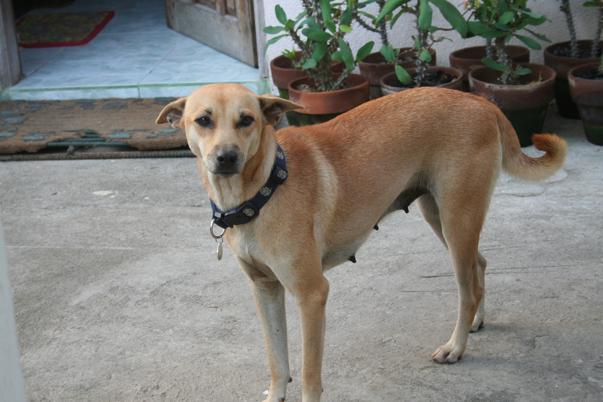
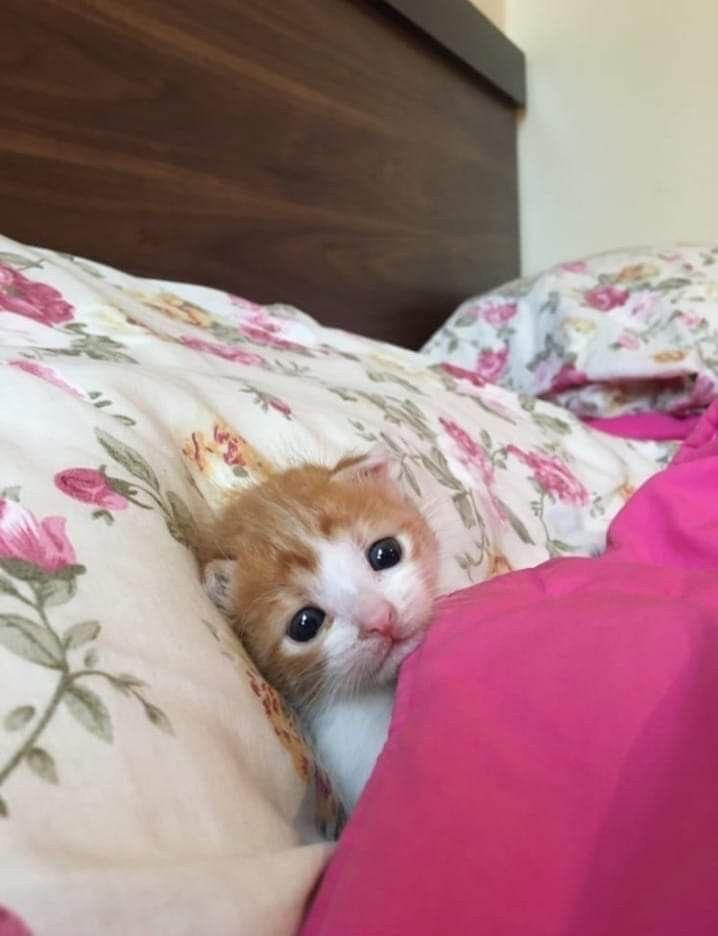

Vaccinated
Trained
Bantay
Gentle, playful, and great with kids. Rescued near the barangay hall and vaccinated.
Adopt Me! ♡Connecting rescued neighborhood dogs and cats with caring local families.
Meet Our Rescues
Gentle, playful, and great with kids. Rescued near the barangay hall and vaccinated.
Adopt Me! ♡
Calm, litter-trained tabby who loves quiet naps by the window. Dewormed and healthy.
Adopt Me! ♡
Energetic puppies looking for an active home with a fenced yard. Very fast learner.
Adopt Me! ♡Missing Dog: Brown male dog with a blue collar, last seen near the public market on Monday morning.
Contact: 0975-427-0133
Free Anti-Rabies Vaccination: Saturday, November 28 • 8:00 AM – 12:00 PM at the Barangay 2 Covered Court.
Bring pets on a leash or in a carrier.
Bantay was found sheltering outside the barangay hall during a rainy afternoon. Despite his tough start, he greets everyone with a wagging tail and soft eyes. He loves lounging beside your feet and going on calm evening walks.
Muning was rescued as a tiny kitten near the neighborhood bakery. She has grown into a cozy, affectionate tabby who purrs the second you pick her up. Her favorite hobby is watching birds from a sunny windowsill.
Upin is a bundle of sunshine who loves chasing rolled-up socks and making new friends. He already knows how to sit for treats and would thrive with an active family or a yard where he can safely explore.